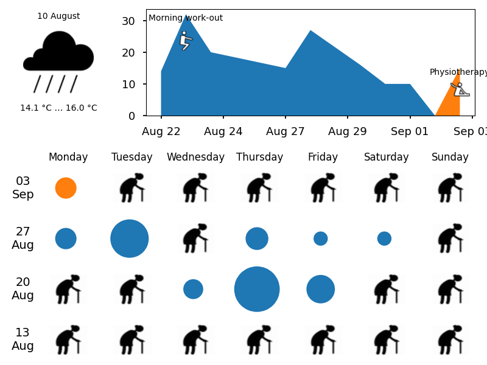

IOT Calendar
Docker Hub container that generates image for Amazon Kindle.
 See description in my blog.
The image contains calendar with events from Google Calendar - supposedly events from your IoT (like Smart wifi button (Amazon Dash Button hack)).
Also it has html-page that updates the image every minute (link to this page in index.html).